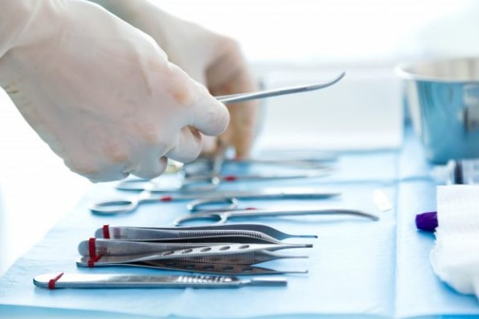
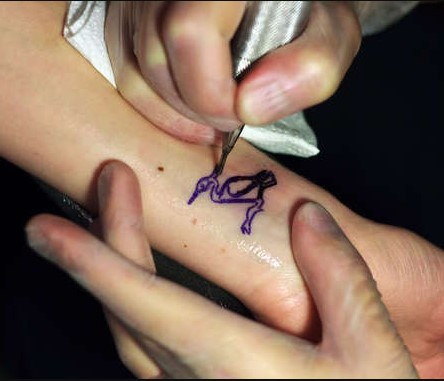
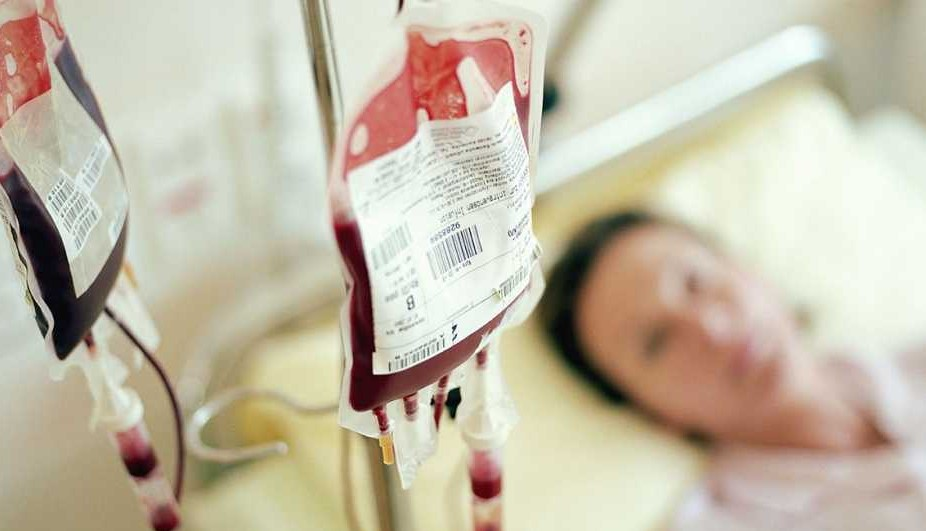

Factores que aumentan el riesgo
Existen varios factores que pueden aumentar el riesgo de contraer el virus de la hepatitis C (VHC). Estos incluyen:
- Uso de drogas intravenosas: El compartir agujas o equipo de inyección con alguien que tiene hepatitis C es una de las formas más comunes de contraer la enfermedad.
- Reutilización de equipo médico no esterilizado: El uso de equipo médico no esterilizado puede aumentar el riesgo de transmisión del VHC, especialmente en entornos donde no se siguen estrictamente los protocolos de esterilización.
- Transfusiones de sangre antes de 1992: Antes de 1992, no se realizaban pruebas para detectar el VHC en la sangre donada, lo que significa que las personas que recibieron transfusiones de sangre antes de esa fecha tienen un mayor riesgo.
- Compartir artículos de higiene personal: El compartir elementos personales que puedan tener pequeñas cantidades de sangre, como cuchillas de afeitar o cepillos de dientes, puede aumentar el riesgo de transmisión del VHC si están contaminados con sangre infectada.
- Prácticas sexuales de alto riesgo: El VHC también puede transmitirse a través de relaciones sexuales, especialmente en personas con múltiples parejas sexuales, en relaciones sexuales anales sin protección, o en presencia de otras enfermedades de transmisión sexual (ETS) que aumentan el riesgo.
- Trasplantes de órganos o tejidos antes de 1992: Al igual que con las transfusiones de sangre, los órganos y tejidos donados no se sometían a pruebas de VHC antes de 1992, lo que aumenta el riesgo para quienes recibieron trasplantes antes de esa fecha.
- Tatuajes o perforaciones corporales: Si el equipo utilizado no está esterilizado o si se comparten tintas contaminadas, existe un riesgo de contraer el VHC durante el proceso de tatuaje o perforación corporal.
- Exposición ocupacional: Los trabajadores de la salud u otros que están en contacto con sangre pueden estar en mayor riesgo si tienen accidentes con agujas o contacto con sangre contaminada.



Contáctanos
Recuerda que puedes realizarte la prueba y acceder al
tratamiento de manera gratuita. Escríbenos a:
hepatitisc@salud.gob.mx o al teléfono: 5519469772.
Imprime la página completa
La legalidad, veracidad y la calidad de la información es estricta responsabilidad de la dependencia, entidad o empresa productiva del Estado que la proporcionó en virtud de sus atribuciones y/o facultades normativas.